VBA-删除密码操作
工具
1、VBA 工程文件（带密码）：这里我用 SW 宏程序（.swp）举例；
2、16 进制编辑器：这里我用 notepad++（需要安装 HEX 插件查看器）；
方法：
0、 如果已经可以查看 16 进制（HEX）的朋友们，就可以跳过这一步，直接看步骤 1。
0-1、打开 notepad++，找到【插件-插件管理】
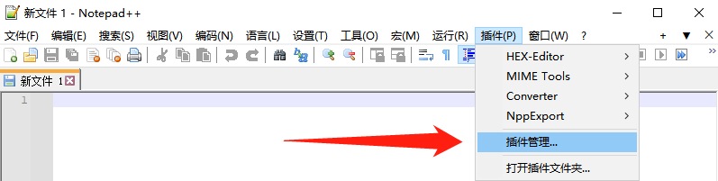0-2、找到并勾选“HEX-Editor”，进行安装
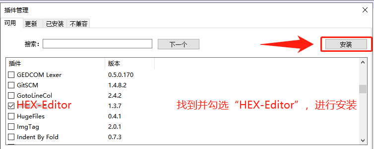1、 swp 文件【右键】-【notepad++编辑】
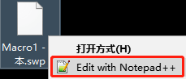2、 打开后你可能会看到一堆不易阅读的内容，此时就需要使用插件转成 16 进制的编辑；
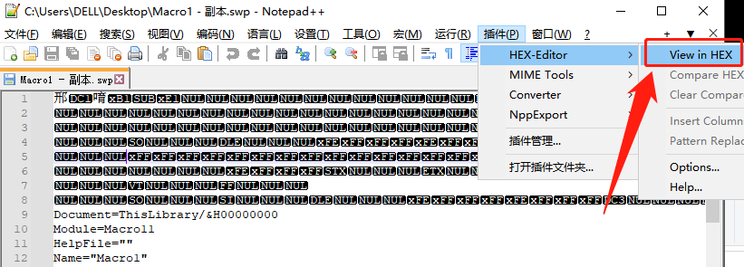3、 这是转 16 进制后的效果；
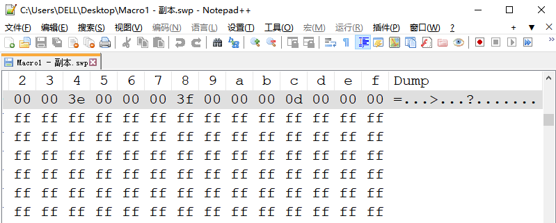4、 然后使用【Ctrl+F】，查找到 DPB 内容；（注意：16 进制下的搜索默认是按 16 进制的内容来，这意味着我们只能搜索“0~F”16 个字符的内容）
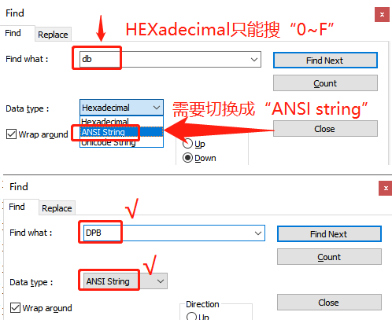5、 点击“Find Next”搜索下一个 DPB，
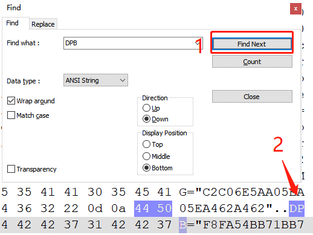6、 将“DPB”改成“DPx”（这里可能需要注意大小写），16 进制修改是按顺序修改的，会要求鼠标光标停留在“DPB”的“B”前面（下图 1），然后输入“x”。此时 B 就会被替换成 x 了，鼠标光标也会前进到 x 后面（下图 2）。
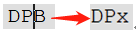7、 完成后，保存修改的 swp 文件并关闭 notepad++编辑器。
打开宏
8、 打开 SW 程序，在【工具-宏-编辑】
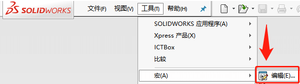9、 找到刚才编辑修改的 swp 文件，并打开编辑。
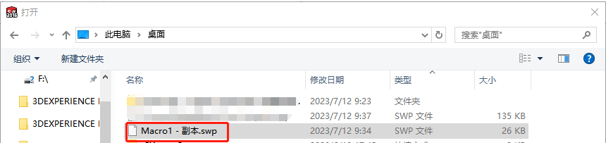10、 打开时，你可能会遇到如下提示：请选择“是”继续加载工程。
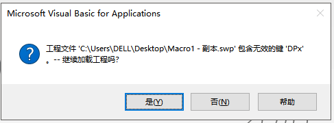11、 你可能还会遇到多个弹窗提示“未知的错误（40230）”，我们全部都点“确定”即可。
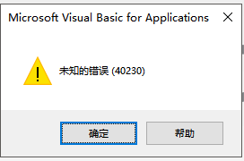12、 点完所有弹窗后，我们就能进入到 VBA 界面了。
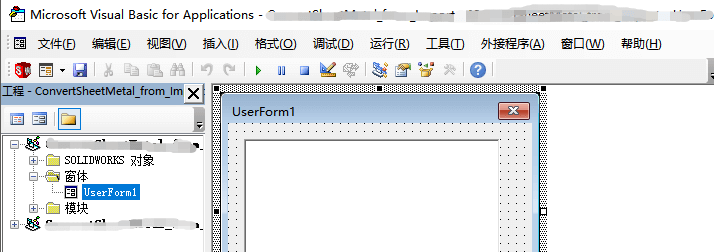13、 不过还没完，这个时候查看内容也还是会弹窗提示“未知的错误（40230）”，我们需要重新给工程文件设置新密码。【工具-工程属性-保护】设置新密码。
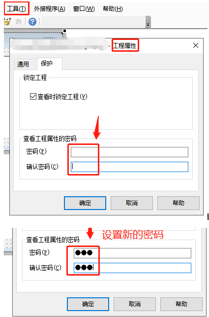14、 然后再去点击模块里的代码内容，就能查看了。以上就是修改 VBA 工程文件忘记密码的全部操作。
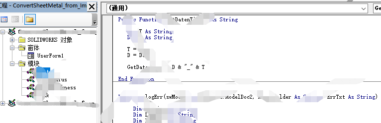